Basic Usage¶
Creating a project¶
To start Trace Tool application open PowerShell/Terminal window, type tt and press [Enter].
When you start it for the very first time no project is opened, and you should see a mostly blank window.
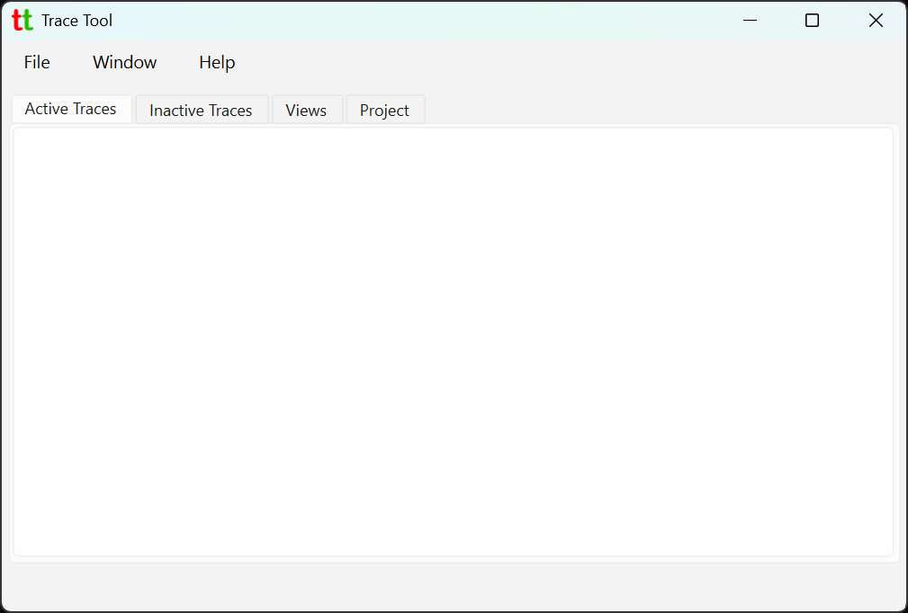
To start tracking and annotating traces from the ChipScope generated csv file you will first need to
create a project by going to menu File -> New Project.
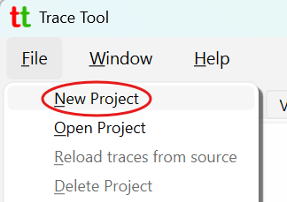
Give project a name and select csv file with ChipScope generated traces to associate with.
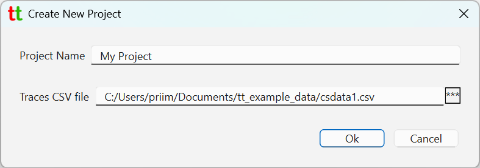
Once created Trace Tool main window should look like so.
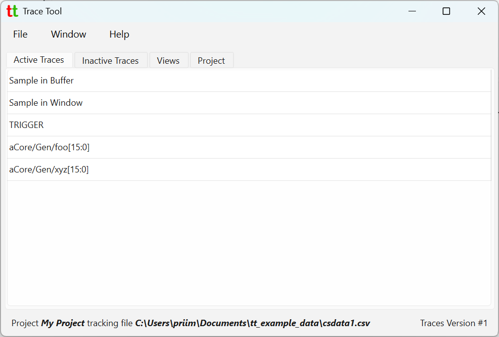
In the Active Traces tab you can see all traces loaded from the source csv file. At the bottom you can see name of the opened project and a csv file that it is tracking. Farther to the right you can see latest version of the loaded traces. When project is created a project directory is created and populated with various files including copy of each trace. This is what allows Trace Tool to keep track of the versions. When csv file is changed, usually by being overridden by Vivado, Trace Tool can make a new copy of traces into the project directory while keeping all previous versions.
Viewing Traces¶
Double-click on any of the trace to open a window with trace plot.
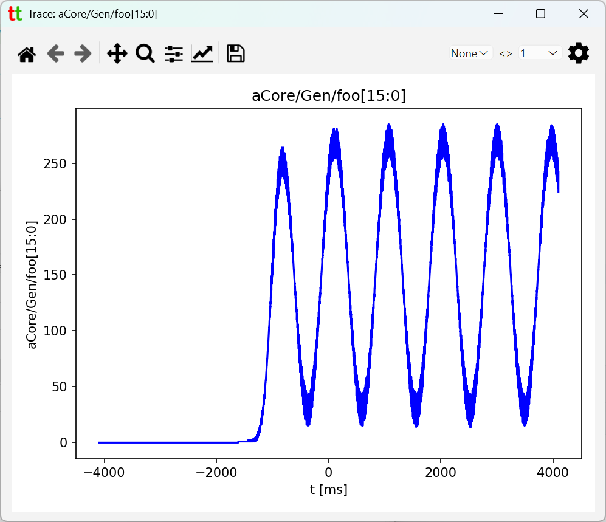
You can also select multiple traces and the right-mouse click to bring context menu to plot multiple traces in one window.
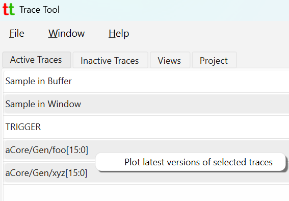
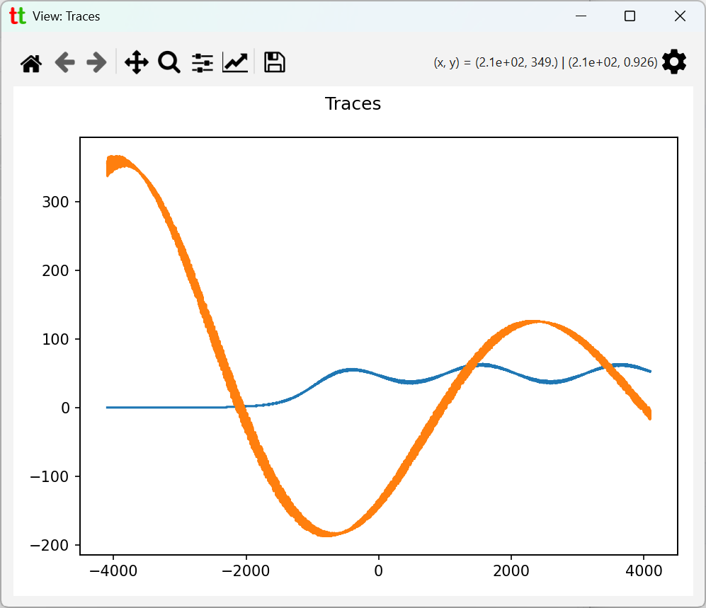
Organizing traces¶
Not every trace present in the csv file is going to be relevant to your work. You can right mouse click
on any trace to bring up context menu and select option Mark as inactive. This will move selected
trace to Inactive Traces tab.
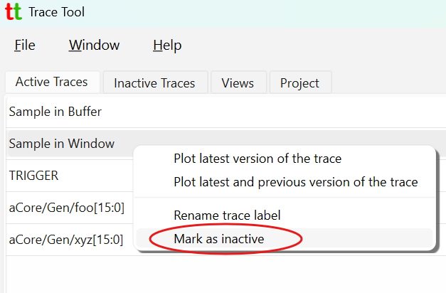
This trace will then be removed from Active Traces tab and be moved into Inactive Traces one.
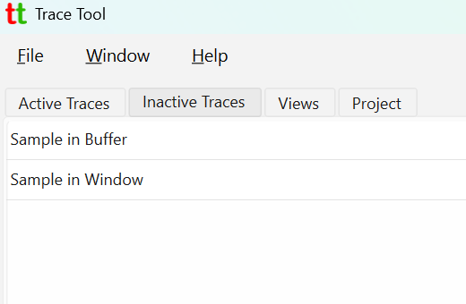
There is nothing special about traces in the Inactive Traces tab. You can still plot them by double-clicking on any trace. It is there simply to help user to organize traces relevant to their work.
Traces from Inactive Traces tab can be brought back into Active Trace tab by
selecting Mark as active from their context menu.
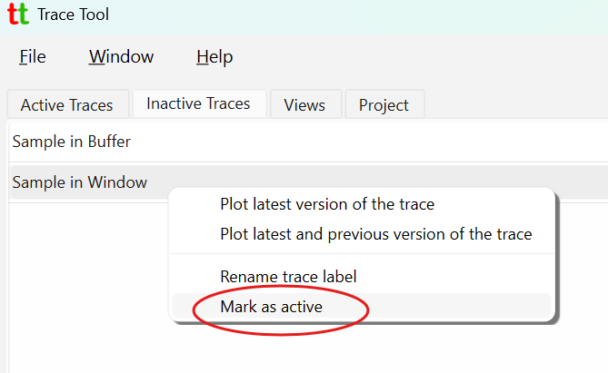
Trace labels¶
Traces are identified by their names or labels. Trace name is column name in the source csv file and
cannot be changed by the user. Trace label is another string identifying trace and it can be changed by the user.
Active Traces and Inactive Traces tabs shows trace labels which at the beginning when project is created
are the same as trace names. To change trace label right mouse click on any trace and click on Rename trace label.
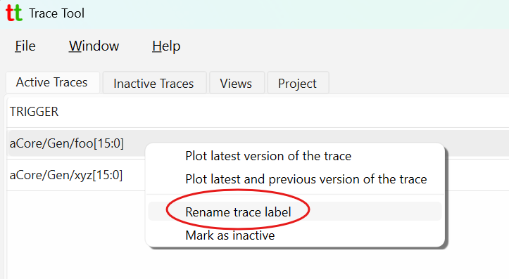
This will open a dialog allowing you change trace label.
Reloading trace data on source csv file change¶
By default, Trace Tool will watch csv file in the opened project for changes and prompt user to reload traces from changed source csv file.
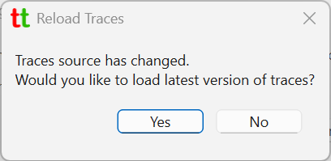
This can be changed by going to File -> Settings menu and
toggling "Watch source files (csv) for changes and notify user." checkbox.
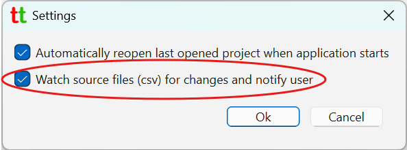
If you accept to reload traces new version trace data will be copied into the project and int the right lower corner
of the main window you will see that latest version changes from #1 to #2.
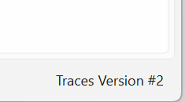
If you disable source file watch in the settings you can explicitly request to reload traces by going to
menu File -> Reload traces from source.
Plotting latest and previous trace version¶
When project tracks more than one version of the trace you can request to plot latest and previous version of the trace
by going to the trace context menu and selecting Plot latest and previous version of the trace.
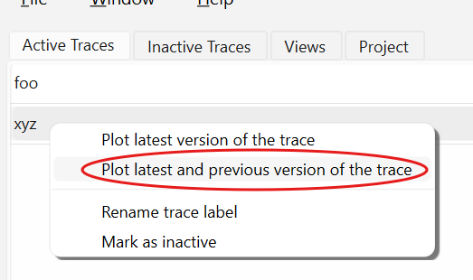
This should open plot window that has both trace versions and their versions listed in the right upper corner.
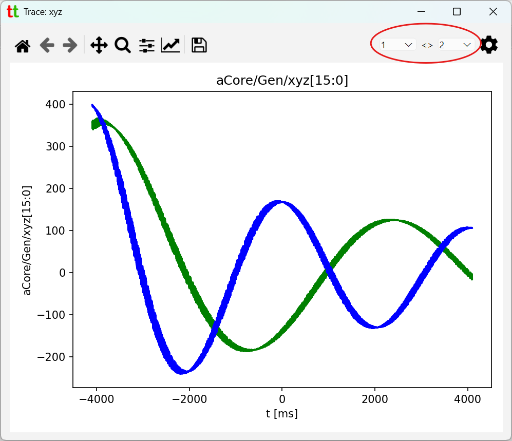
Changing time step¶
Source csv file typically will not contain any information about sampling rate (i.e. time step). Thus, by default when
project is created time step it automatically set to 1 ms. You can change that by going to the Project tab and
clicking on Change Value button for implied time step.
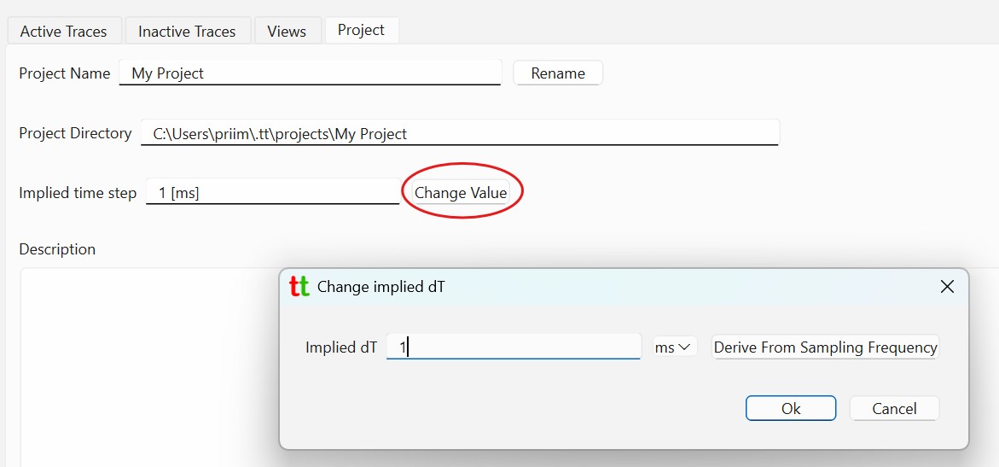
Often you will know sampling rate instead. In that case you can click on Derive From Sampling Frequency.
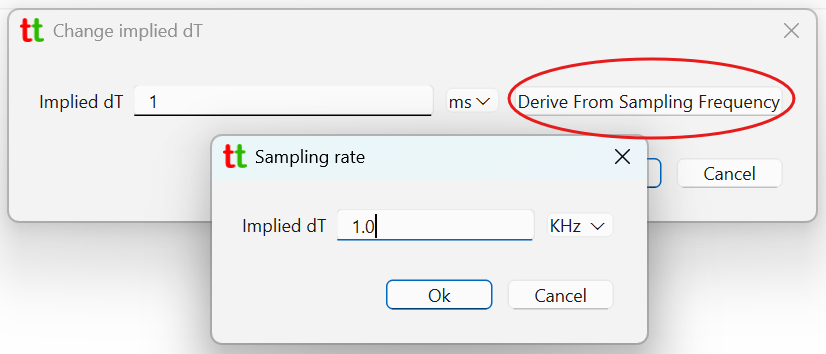